Ukázka carouselu
Cesta napříč všemi MS, kde ČR a ČSSR získalo zlato, seřazená chronologicky. Deset snímků, kliknutím je zvětšíte.

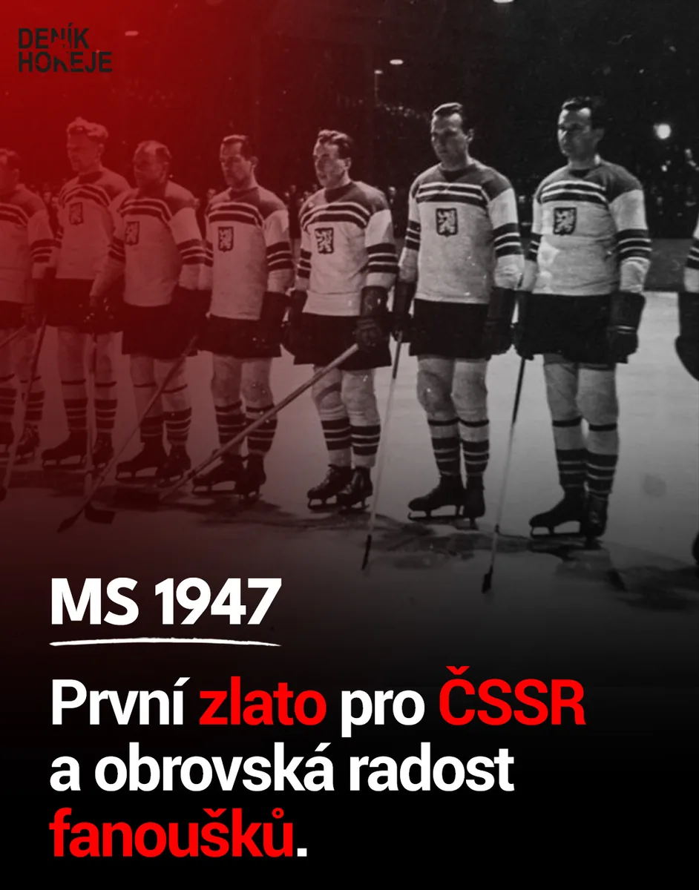
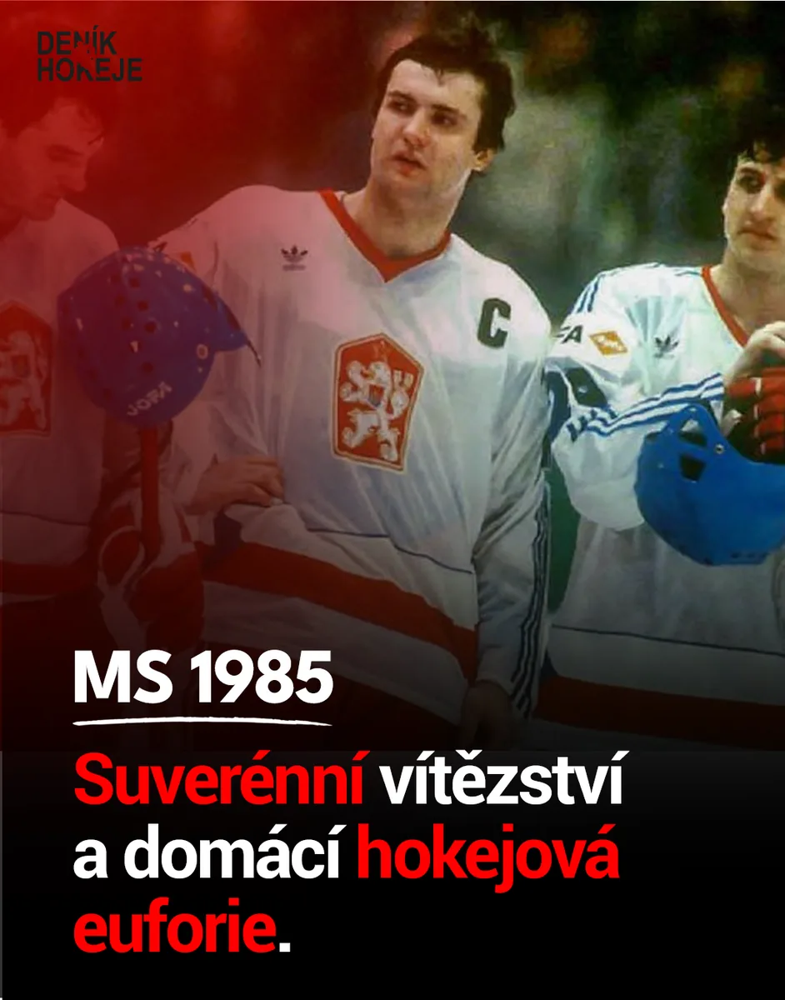

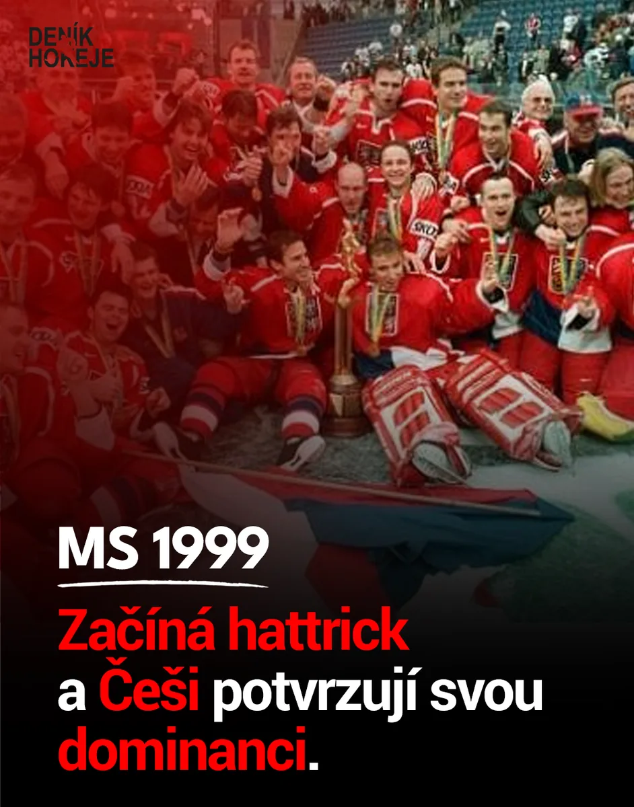

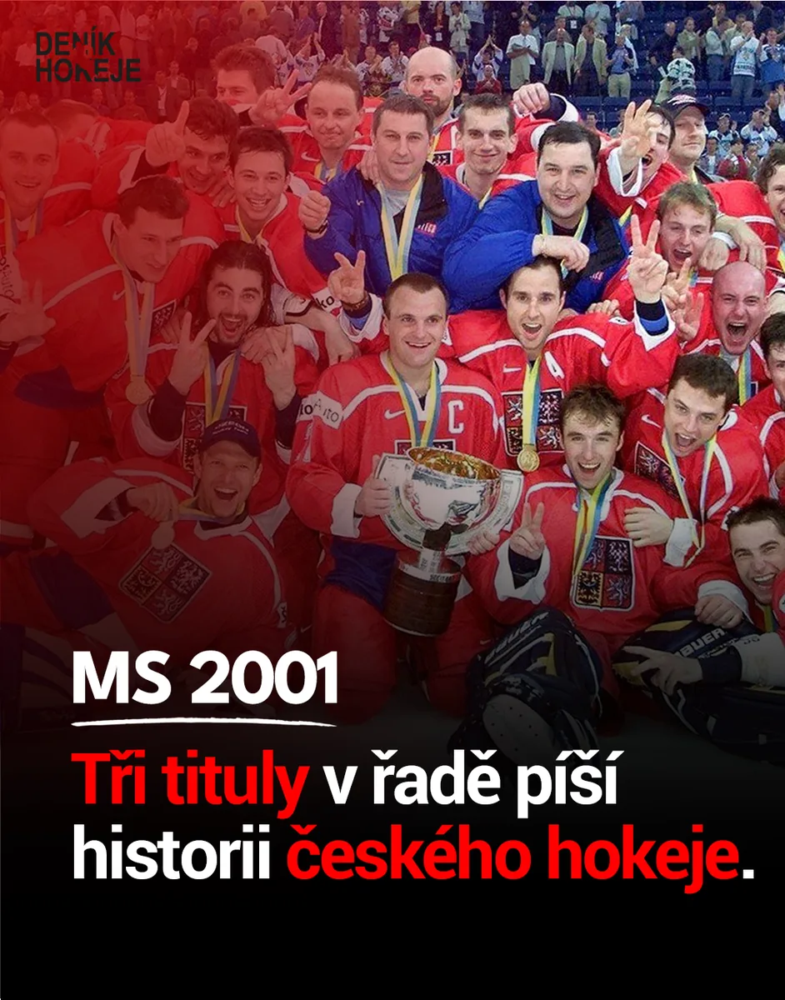
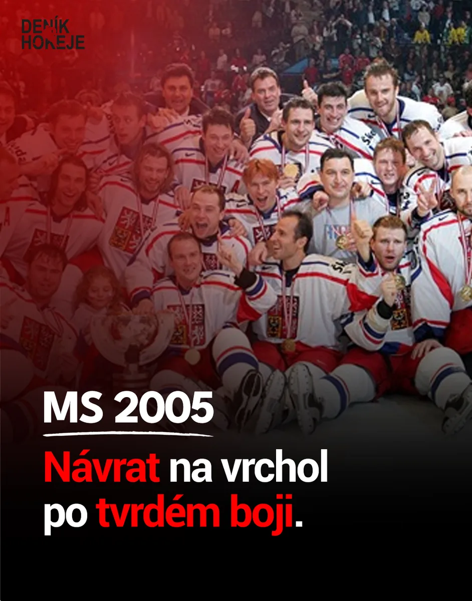


Student multimediální komunikace, grafik, střihač, web developer a mladý podnikatel.
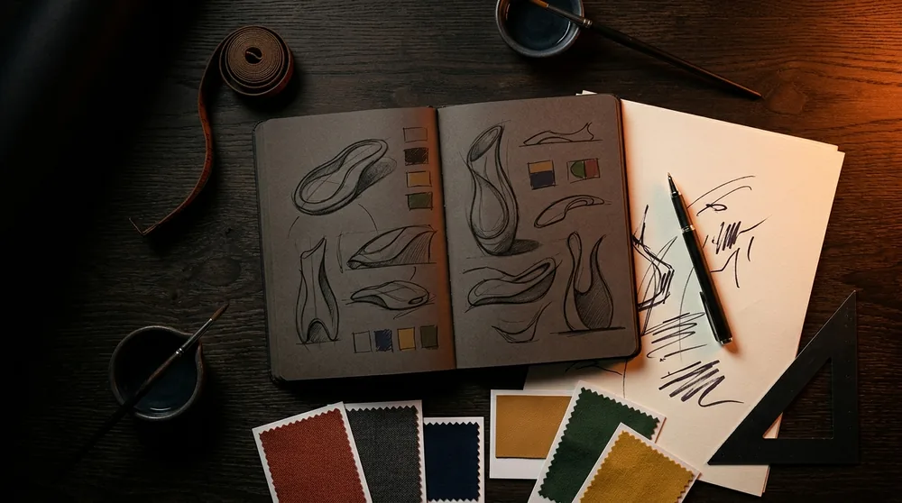
Vizuální identita značky, tvorba a úprava brandingu.

Střih, motion, produkce obsahu.
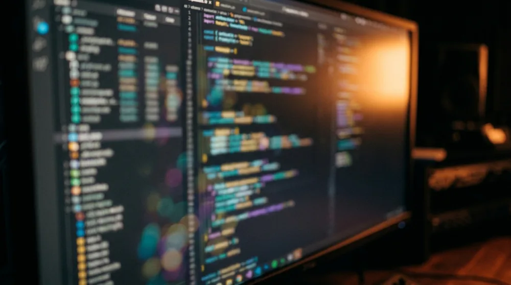
Frontend, backend, UX/UI.
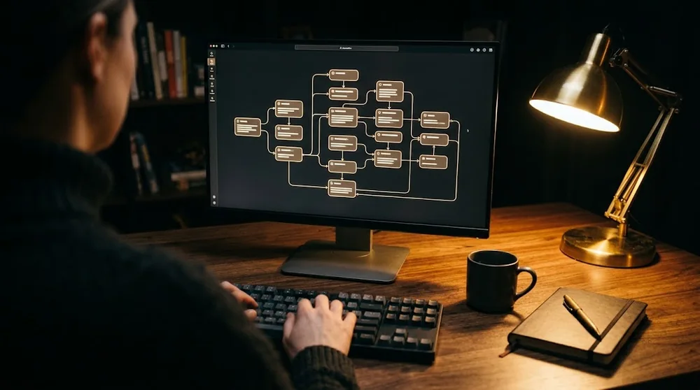
Automatizace a AI nástroje v praxi.

Social media a obsahová strategie.
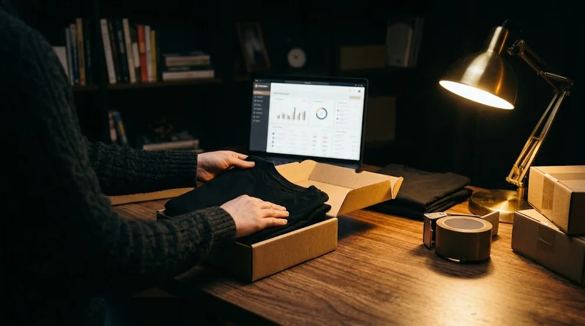
Vlastní projekty a podnikání.
První krůčky v designu a tvorbě obsahu, experimenty, učení se a objevování kreativity.
Studium multimediální komunikace: design, video, média a technologie.
Grafika / sociální sítě / video / žurnalistika.
AI automatizace / weby / UX/UI / frontend / backend.
Značka / e-commerce / social media / content.
Weby, aplikace a automatizace pro firmy.
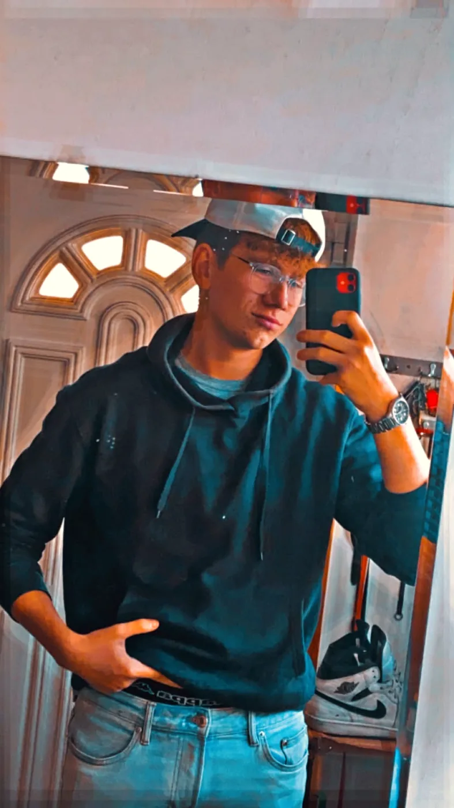
Portfolio
Hokejové médium, kde propojuji vizuální identitu s rychlým redakčním provozem. Vizuály musí být čitelné během vteřiny a fungovat napříč formáty.
Cesta napříč všemi MS, kde ČR a ČSSR získalo zlato, seřazená chronologicky. Deset snímků, kliknutím je zvětšíte.





Green Line: sovětská pětka, která byla nejděsivější v historii hokeje. Pět snímků, kliknutím je zvětšíte.
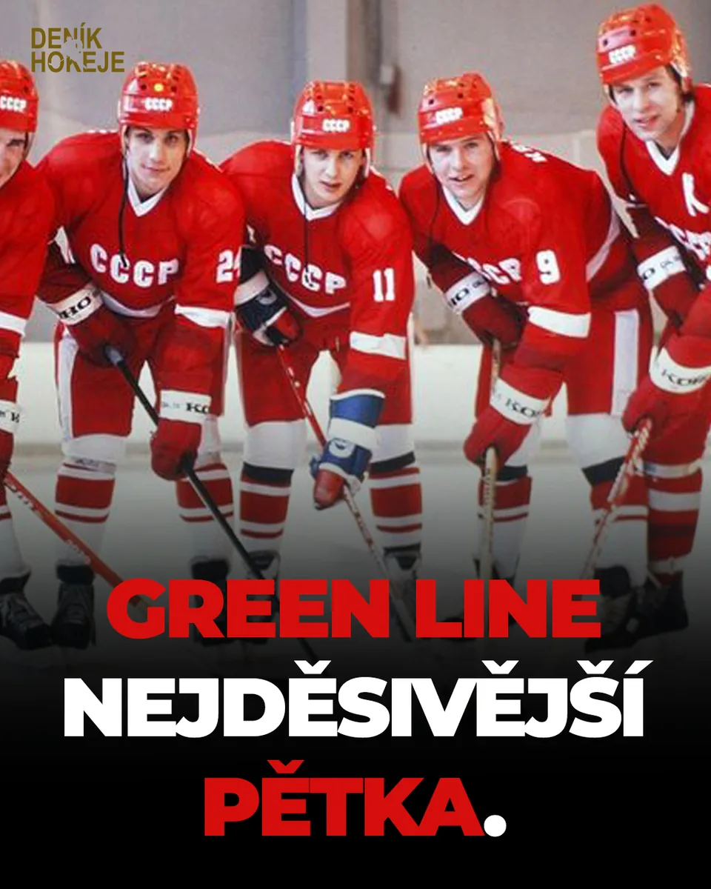

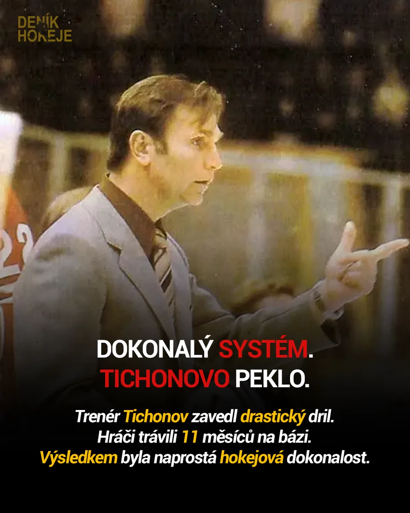


YouTube
Náhledové grafiky pro videa na YouTube. Musí fungovat v malém i přes celou obrazovku.


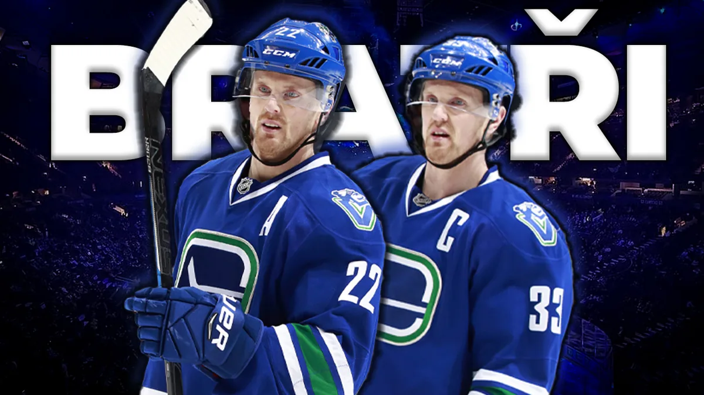
Značka
Logo pro Boží kytky, logo BSK a logo videokanálu Deníku Hokeje v červené a černobílé variantě.
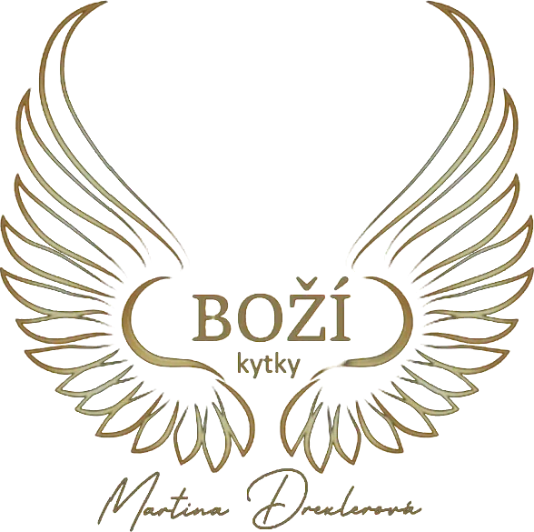
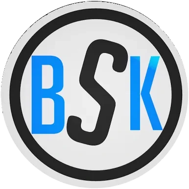
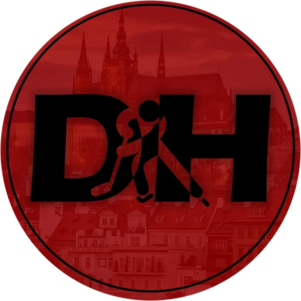

Odbavím celou zakázku od značky po hotový web. Bez předávání mezi třemi dodavateli.
Napsat mi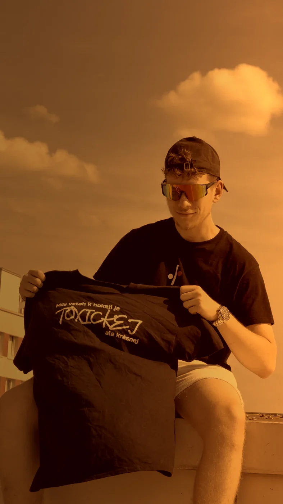
Napište mi, co máte v hlavě. Ozvu se do dvou dnů a řekneme si, jestli vám s tím umím pomoct.